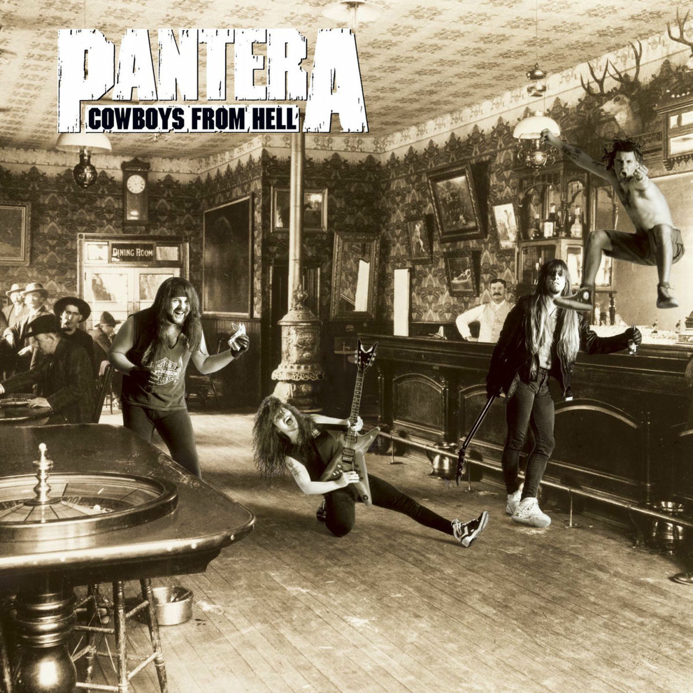

1990
Слухати на Spotify
Cowboys from Hell
Альбом, з якого розпочалася нова ера Pantera. Саме тут гурт сформував свій фірмовий грув-метал звук.
Ключові треки:
- 1. Cowboys from Hell
- 2. Cemetery Gates
- 3. Domination